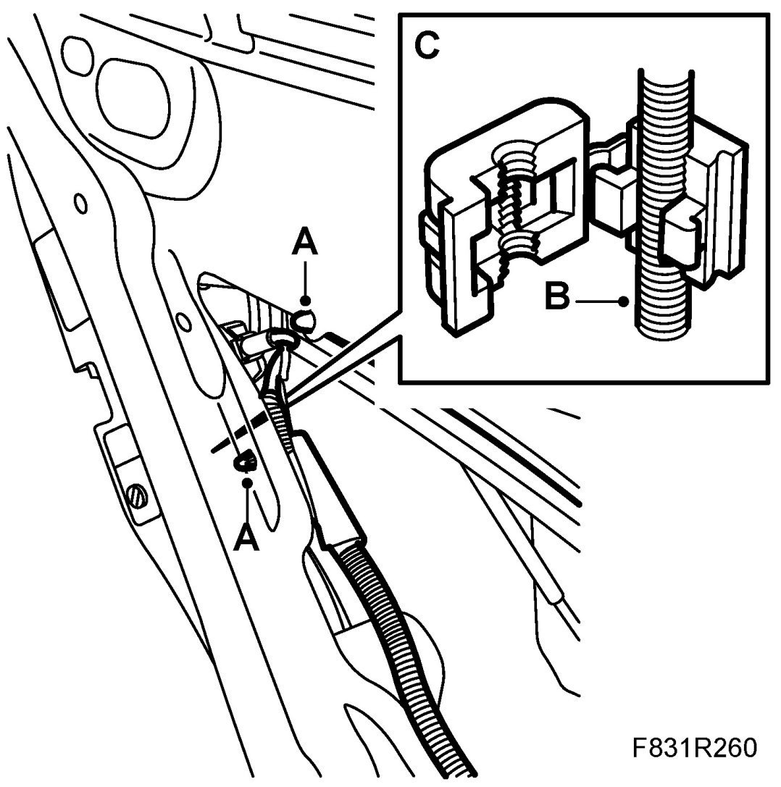
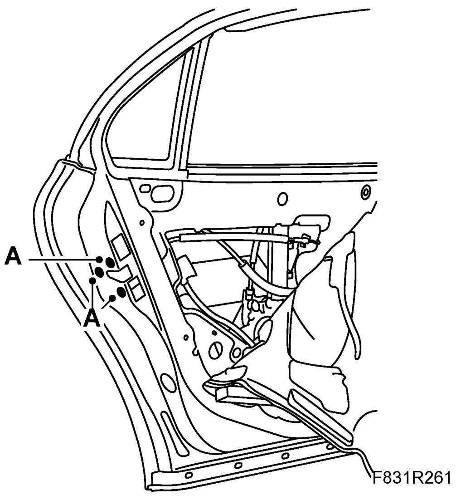
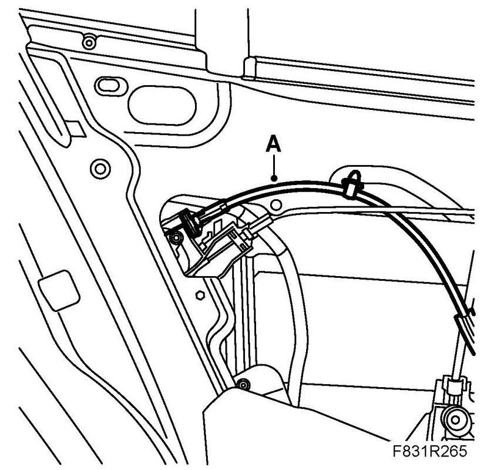
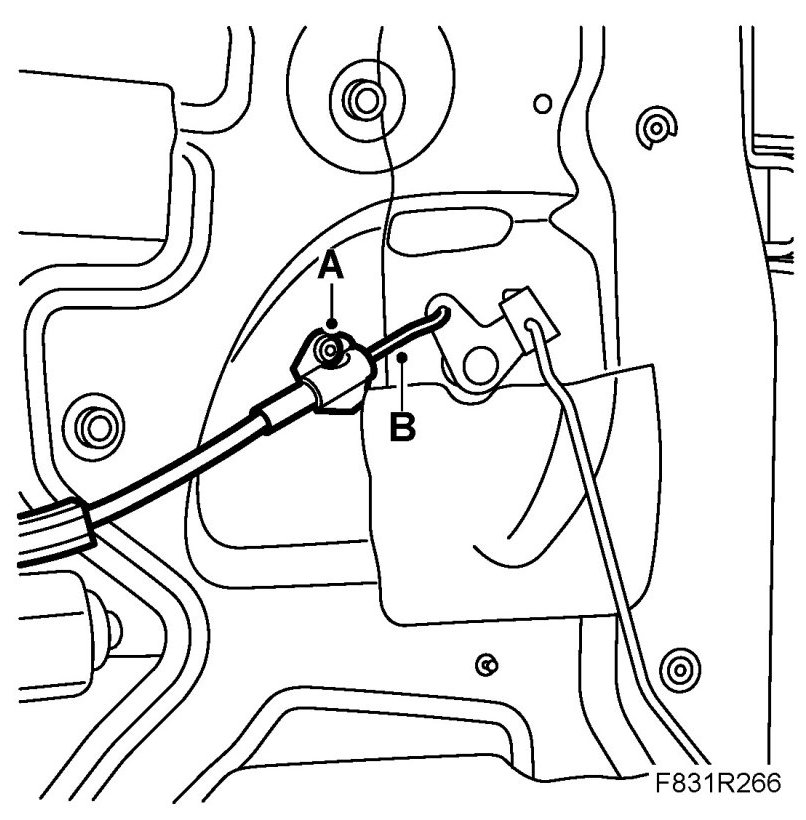
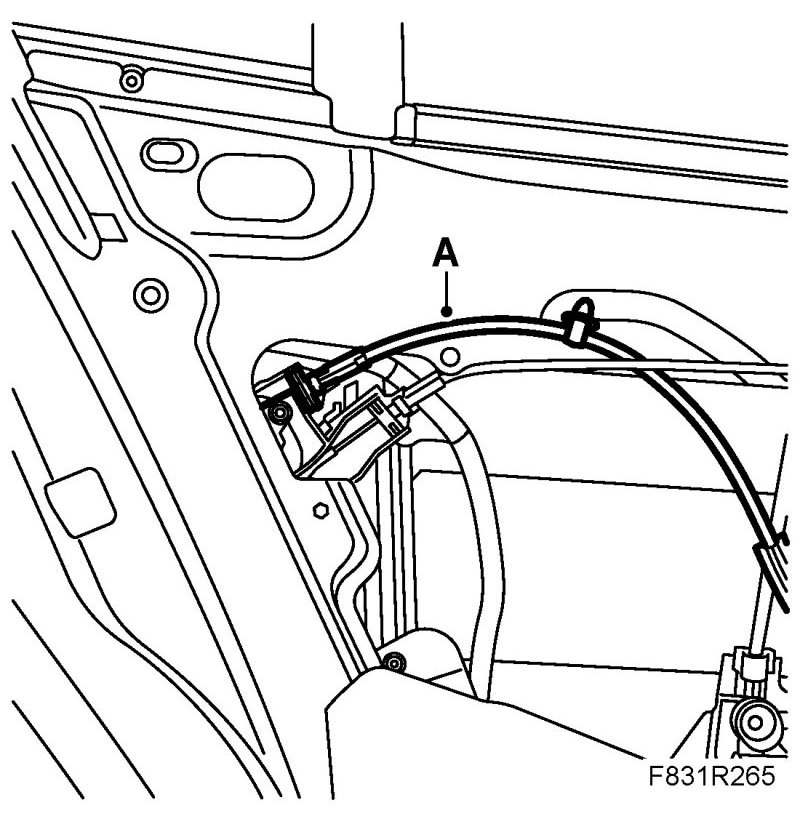
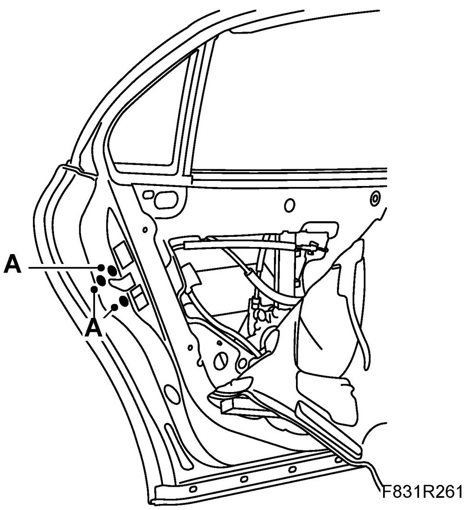
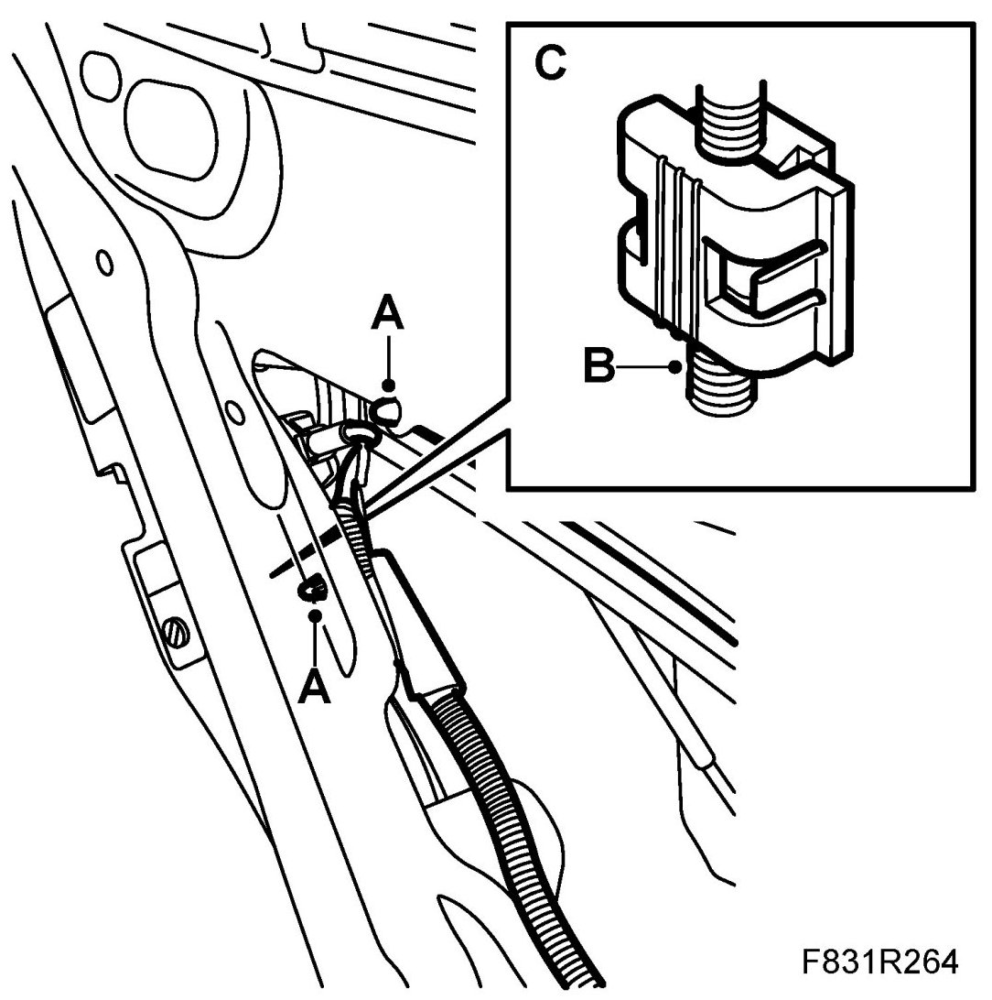

Rear Door, Lock Button Cable
Rear Door, Lock Button Cable
To remove
1. Remove Rear door trim.
2. Carefully remove the water barrier from the door.
3. Remove the lock button cable.
- Undo the clips (A)

- Detach the opening handle's rod (B) from the clip (C) in the door lock.
- Remove the door lock's 3 screws (A).

- Push the door lock forward until the cable can be removed (A).

- Certain cars: Remove the cover.
- Remove the cable (A) from the door lock.
- Drill out the rivet (A).
- Remove the cable from the lever (B).
To fit
1. Fit the opening cable. Secure the cable to the lever. (B)

2. Fit a new rivet (A).
3. Fit the cable (A) to the door lock.

4. Certain cars: Fit the cover.
5. Put the lock in place.
6. Fit the lock screws (A).

7. Fit the rod (B) in the clip (C). Close the lock cover for the clip.

8. Fit the clips. (A)
9. Fit the plastic water barrier.
10. Fit Rear door trim.